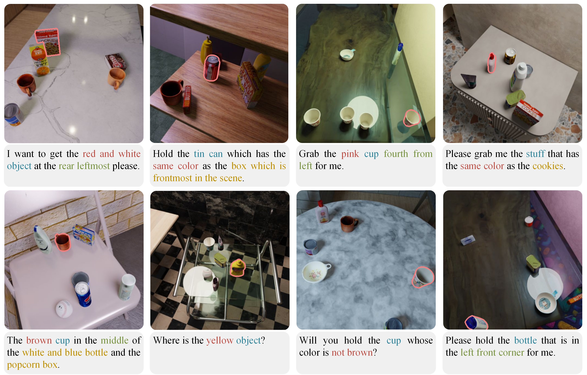

Abstract
Robotic grasping guided by natural language instructions faces challenges due to ambiguities in object descriptions and the need to interpret complex spatial context. Existing visual grounding methods often rely on datasets that fail to capture these complexities, particularly when object categories are vague or undefined. To address these challenges, we make three key contributions. First, we present an automated dataset generation engine for visual grounding in tabletop grasping, combining procedural scene synthesis with template-based referring expression generation, requiring no manual labeling. Second, we introduce the RefGrasp dataset, featuring diverse indoor environments and linguistically challenging expressions for robotic grasping tasks. Third, we propose a visually grounded dexterous grasping framework with continuous grasp generation, validated through extensive real-world robotic experiments. Our work offers a novel approach for language-guided robotic manipulation, providing both a challenging dataset and an effective grasping framework for real-world applications.
Dataset Generation Pipeline

Dataset Samples
Visually Grounded Dexterous Grasping

Citation
@misc{citekey,
title={Title},
author={author},
year={2025},
eprint={xxx},
archivePrefix={arXiv},
primaryClass={cs.RO},
url={https://arxiv.org/abs/xxx},
}